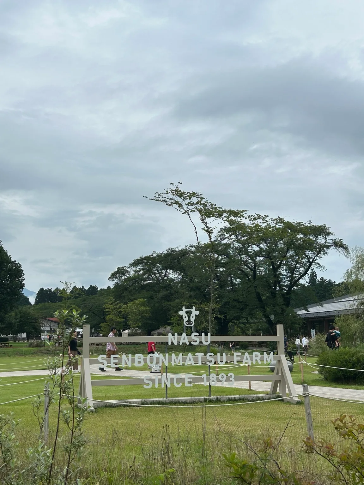
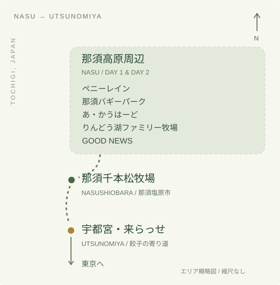
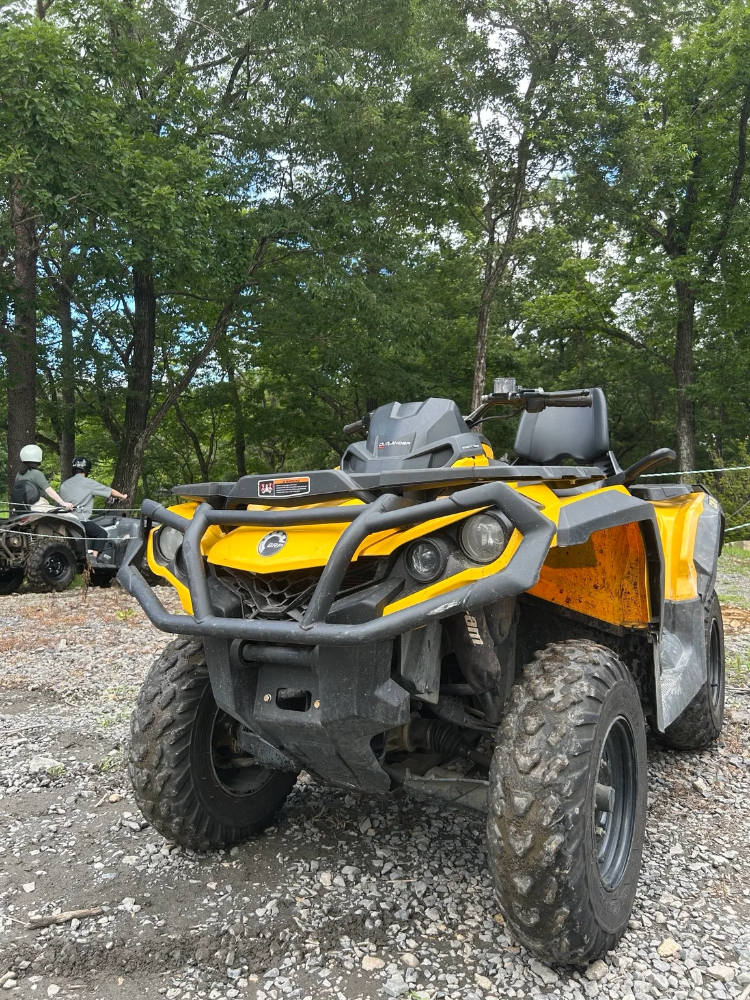
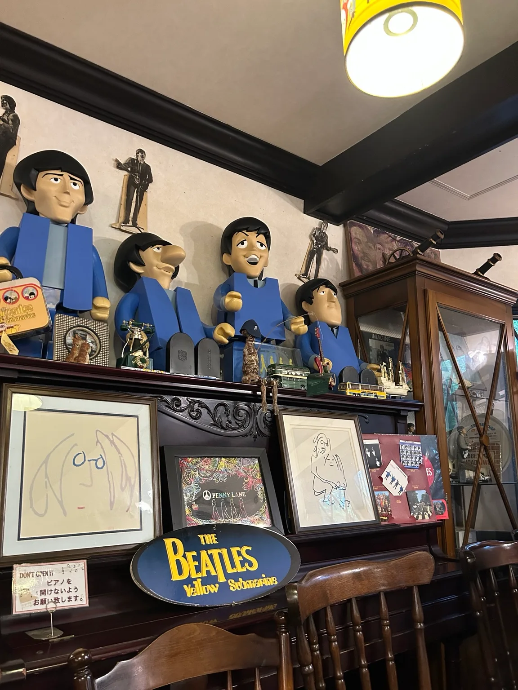
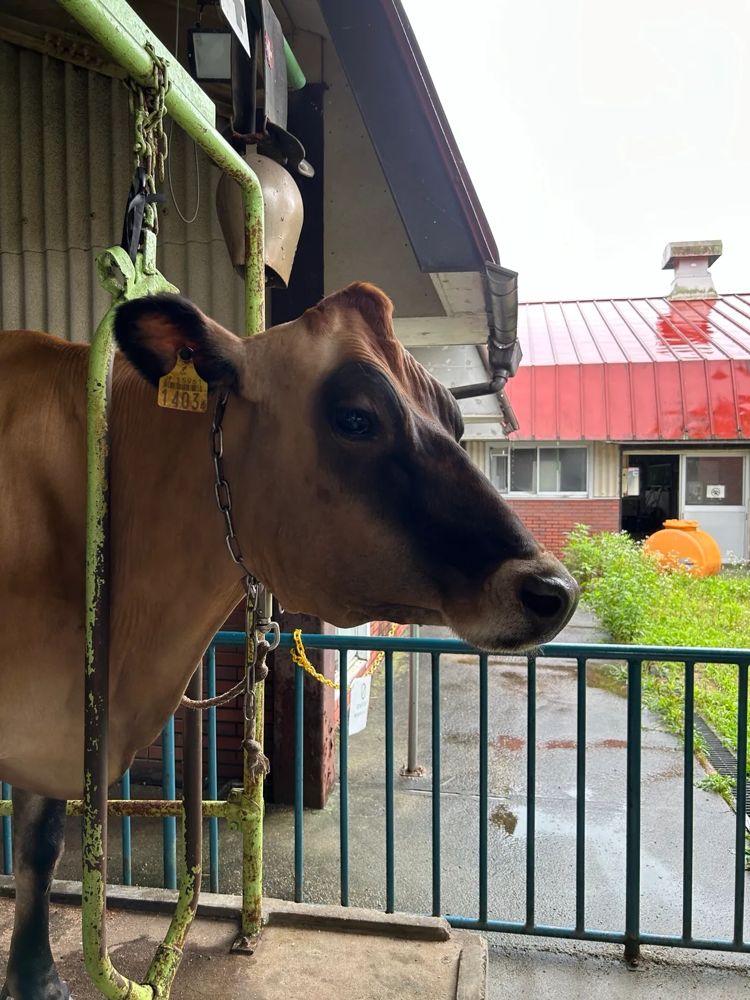
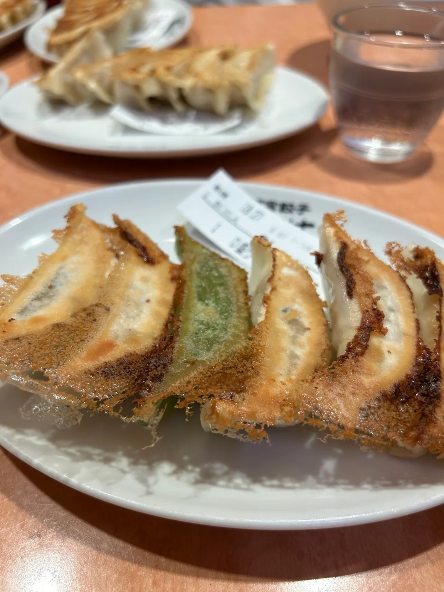

FIRST STOP / LUNCH
あ・かうはーど
東京から那須へ。旅の最初は「あ・かうはーど」でランチ。そのあと、バギーパークへ向かった。

THE WEEKEND AT A GLANCE
7月26日 · 那須から宇都宮へ
A LITTLE SENSE OF PLACE

THREE AREAS
パン屋さん、バギー、りんどう湖、GOOD NEWSは那須町内。千本松牧場は那須塩原市にあり、那須高原のスポットとは別のエリア。
2日目の後半は千本松牧場へ移動し、さらに南の宇都宮で餃子を食べてから東京へ帰った。
車の経路と所要時間は、リンク先の地図で確認できます。
DAY ONE / JULY 25
FIRST STOP / LUNCH
東京から那須へ。旅の最初は「あ・かうはーど」でランチ。そのあと、バギーパークへ向かった。

STAY / ONE NIGHT IN NASU
今回の宿は、Airbnbで予約した「テラス1029那須」。那須で一泊して、翌朝はペニーレインへ。
DAY TWO / JULY 26


A HANDS-ON FARM VISIT
那須高原りんどう湖ファミリー牧場
りんどう湖ファミリー牧場では、楽しみにしていた乳搾りを体験できた。牛を間近に見て、実際に触れる時間も、この旅の記録に。
SOMETHING TO TAKE HOME
GOOD NEWS・バターのいとこ
GOOD NEWSとバターのいとこにも立ち寄った。ここで買ったのは、小さく個包装になった「BROWN CHEESE BROS.」のバームクーヘン。
A FAVORITE SCENE
那須千本松牧場

ON THE WAY HOME / UTSUNOMIYA
来らっせ
東京への帰り道、宇都宮の「来らっせ」に寄って餃子を食べた。那須の緑を楽しんだ週末は、おいしい寄り道で締めくくり。
2026年7月25〜26日の旅の記録。施設の営業時間・料金・体験の実施日時は、各公式サイトでご確認ください。
UNTIL THE NEXT JOURNEY
ほかの旅の記録へ ↗